画像内の人物の表情を自由に変えられる機能。プロンプトとカメラオプションを組み合わせて、同じ人物のさまざまな表情画像を生成します。
モデルの人物らしさを保ったまま感情（笑顔・驚き・真剣さ）だけを変えたいときに使います。撮影前に表情の方向性を提案したり、クライアントと下書きを比較するのに有効です。
再撮影なしで、同じ人物の表情候補（笑顔・驚き・真剣さ）を素早く比較できます。
感情表現が重要な広告、サムネイル、詳細ページ、ストーリーボードに適しています。
撮影前に表情の方向性を提案するとき、またはクライアントと下書きを比較するとき。
左サイドバーのスマイルアイコンから入り、ドロップまたはクリックで元画像をアップロードします。
左の縦バーで、スマイルアイコンをクリックします。このメニューは Expression Transformer.
Drop Image Here または Click to Upload で、元画像をアップロードします。顔がはっきり写り、1人の人物が中央にいるほど、表情変換が安定します。
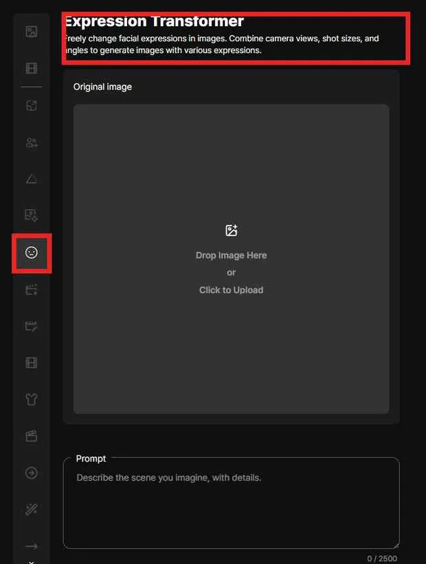
顔がはっきり写り、1人の人物が中央にいるほど、表情変換が安定します。
顔がはっきり写り、1人の人物が中央にいるほど変換が安定します。アップロードした画像はプレビューとして表示されます。
元の人物の顔の印象と服装がはっきりしているほど、表情だけを変えた結果が一貫します。
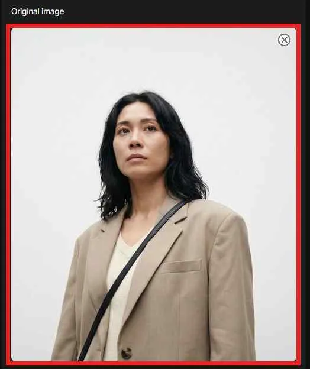
希望する表情をプロンプトとして入力し、同じ人物と衣装を保つために preserve identity / preserve clothing を追加します。
希望する表情をテキストで入力します。例： gentle smile, surprised expression, serious cinematic expression.
同じ人物と衣装を保つには、次の語も含めます： preserve identity と preserve clothing.
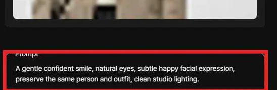
Camera View、Shot Size、Camera Angle の3つの条件を組み合わせ、同じ表情を異なるフレーミングで描画します。すべて任意です。
被写体がカメラに対してどちらを向くかを選びます（Front View、3/4 View、Profile View など）。正面のカットは Front View を、少し振ったカットは 3/4 View を使います。
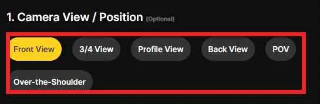
被写体がどれくらい大きく写るかを選びます（Wide Shot、Medium Shot、Close-Up など）。表情を強調するなら Close-Up の範囲を、衣装とポーズを見せるなら Medium の範囲を使います。
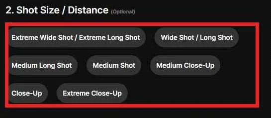
カメラの高さと視線の印象を選びます（Eye Level、Low Angle、High Angle など）。 Eye Level は自然に見え、 Low Angle は被写体を強く見せます。
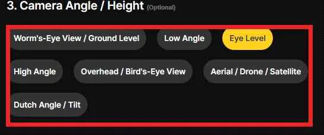
元画像とプロンプトが準備できたら Generate（6 クレジット）を押し、確認ポップアップと進行率で状態を確認します。
元画像とプロンプトが準備できると、 Generate ボタンが有効になります。1回の生成で 6 クレジットを使用します。.
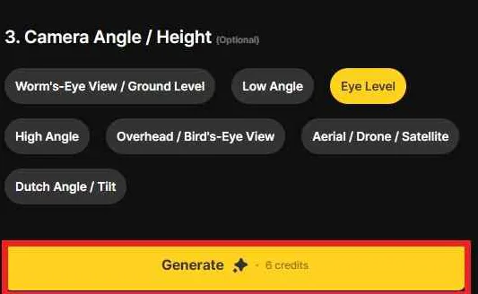
「 Would you like to generate an image? 」というポップアップが表示されます。 OK で開始、 Cancel で前の画面に戻ります。
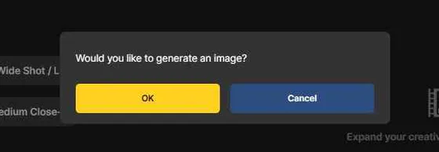
Creating your image… とともに進行率がパーセントで表示されます。完了すると右の結果エリアに画像カードが追加されます。
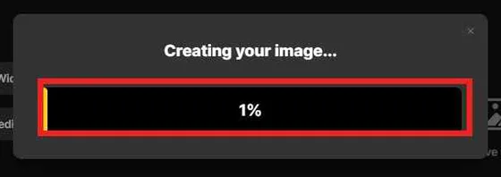
表情画像は右の結果エリアにカードとして積み重なり、同じ元画像から作った複数の表情候補を1画面で比較できます。
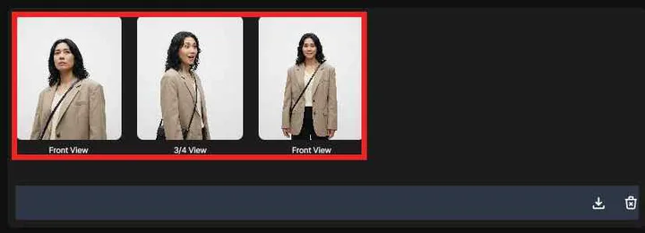
下部のアイコンで結果をダウンロード・整理し、まず表情だけをテストしてから必要に応じてカメラオプションを足すと、人物らしさを守れます。
結果エリア下部の download icon で画像をダウンロードし、 trash icon で結果を整理します。
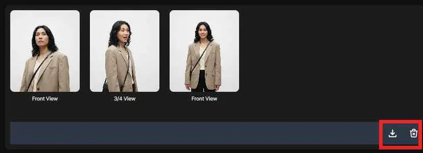
同じ元画像から、感情の異なる表情候補（穏やかな笑顔・驚いた反応・真剣な表情）が生成されます。
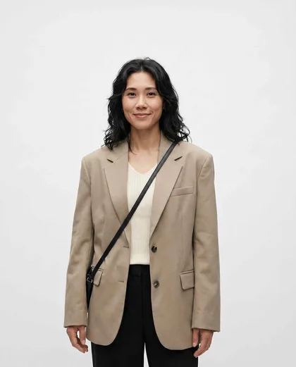
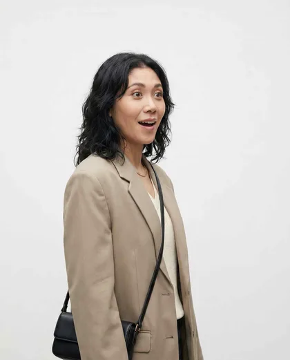
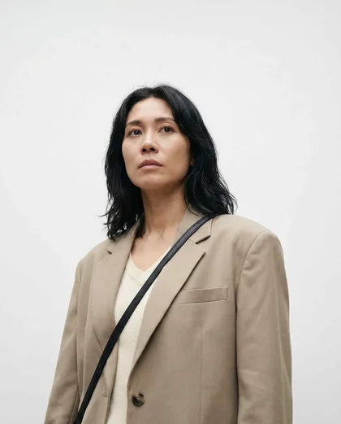